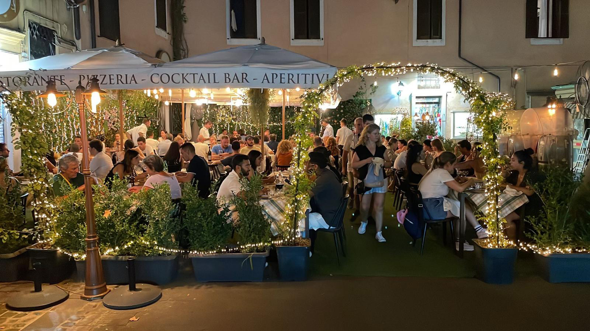

Osteria Sonnino
A great, affordable spot to try some of the most traditional Roman dishes, right in the heart of Trastevere. Cozy vibe, friendly staff, and they even speak English and Spanish.
📍 Google Maps
Explore some of the best places to eat well without breaking the bank.
A great, affordable spot to try some of the most traditional Roman dishes, right in the heart of Trastevere. Cozy vibe, friendly staff, and they even speak English and Spanish.
📍 Google Maps
Roman classic near the Colosseum. Homemade pasta, great value, cozy atmosphere and fast service.
📍 Google Maps
Had enough pasta? Get a juicy burger for a change, great price, great taste.
📍 Google Maps
One of the most popular artisan gelato shops in Rome. Great flavors, big portions, and affordable prices.
📍 Google Maps
Rome is an amazing city to walk around and get lost in. Whenever you have free time, go explore! Check the tourism section for our best tips.
Join WhatsApp groups for ERA, ESN, or others. Their cards give you discounts for trips, parties and sports. A great way to meet people.
Blue Bar (San Lorenzo): Cheap, outdoors, always full of Erasmus students.